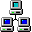

<!DOCTYPE html>
<html lang="en">
<meta name="viewport" content="width=device-width, initial-scale=1">
<link href="styles/site.css" rel="stylesheet">
</head>

<body>
    <script src="https://code.jquery.com/jquery-1.12.4.js"></script>
    <script src="https://code.jquery.com/ui/1.12.1/jquery-ui.js"></script>
    <script src="scripts/desktop.js"></script>
</body>
<div id="recycleIcon" class="draggable ui-widget-content desktopIcon">
    
    <p>Recycle</p>
</div>

<div id="networkIcon" class="draggable ui-widget-content desktopIcon">
    
    <p>Network</p>
</div>


<div class="toolBar">
    <ul>
        <li class="start-menu">
            <a class="active"> Start


            </a>
            <div class="start-menu-content">
                <a >Link 1</a>
                <a >Link 2</a>
                <div class="breakLine"></div>
                <a >Link 3</a>
            </div>
        </li>
        <li><a class="open-window">Internet Explorer</a></li>
        <li class="time">
            <a id="desktop-clock"></a>
        </li>
    </ul>
</div>

</html>